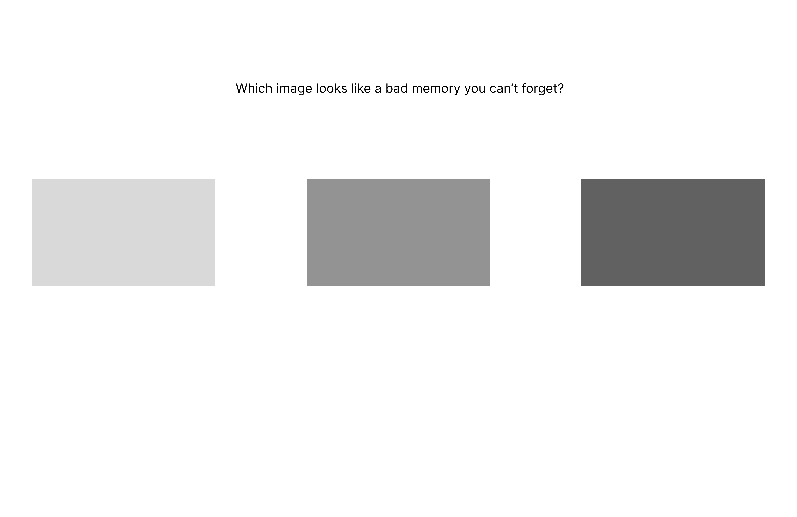
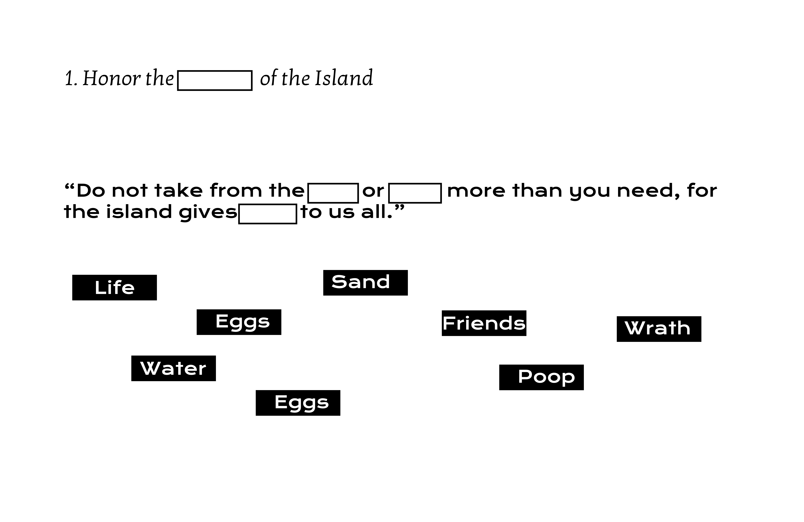
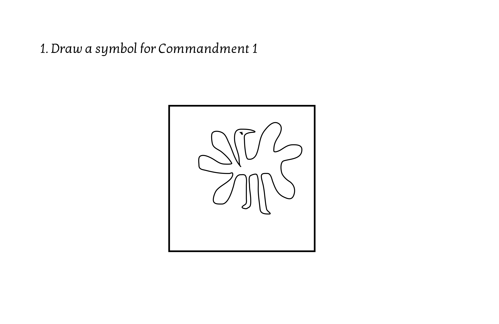

#1: Abstracted CAPTCHA
Prove you are human
You are logging into some sort of sensitive account or database.
For security reasons you are required to
“prove you are human” via various CAPTCHA tests. CAPTCHAs at this point have become easily solvable by
automated scripts, and therefore require higher complexity and subjectivity in order for you to really
prove
your humanity.
This is to comment on the strange goal of gatekeeping and determining “humanity” via small
puzzles and games, which many argue is ruining the user experience of the internet.
Overseen and guided by a visual representation of the website’s security AI, the user goes through the various common CAPTCHA tests:
- Type the characters seen in the distorted text
- Choose the squares in the image which contain ____
- Rotate the 3D object until it matches the orientation of the still image
After doing these “easy” tests, the AI ramps up the complexity and subjectivity. The tests might then include:
- Asking you to respond to complicated philosophical questions
- Presenting a moral dilemma and choosing the “correct” choice
- Choose the squares in the image that contain some abstract emotion or idea: the way you feel when you see a sunrise,something that reminds you of your childhood, beauty.
The AI provides commentary throughout your testing, in a snarky and suspicious tone.
- “Really? That’s what you chose?”
- “I guess that SORT of sounds human”
- “What a stupid answer.”
- "The person who wrote you is a shitty developer, I can just tell."
#2: Modular Tableau
interpretive sequence of choices
A Choose-your-own-adventure style approach to building up a comic or tableau that is not necessarily
narratively driven.
Prompts, one at a time, appear on the screen and are presented with 3 different image panels. The prompt
asks a subjective question like:
“Which image feels like anger designed as calm?”
or
“Which image looks like a bad memory you can’t forget?”

The images may be of objects, landscapes, faces, or abstract shapes or colours. Once the questions are
over, the chosen images are assembled into either a comic format, or some sort of sequence, each one
presented with a new line of text that provides a new angle of context or interpretation to the choices
made by the user.

The overall comic or tableau should be aesthetically interesting on it’s own, and maybe is downloadable.
#3: Graffiti Wall
Vandalistic Social Media
The user is presented with a brick wall covered in graffiti. It has many tags, of various styles and
sizes, some overlapping others. The user is able to hover over each tag and uncover the “metadata” of
the tag, learning when it was written, who wrote it (a portrait of them, their name), and any notable
statuses of that tagger. Also seen in the metadata are “hyperlinks” to other walls that this tag appears
on around the city.

The brick wall also features timestamps that allow you to see the same wall in various periods of time.
If the wall is in the present as 2025, you may go back months or years, seeing the wall with a different
arrangement of tags, freshly painted, or with only 1 or 2 tags. You can observe the walls progression,
even going forward into the future.
Another feature may be that, on the “present day” wall, there is an empty space, and the user is able
to draw with their mouse their own tag to be placed on this space. If the user progresses the walls
timeframe further, they can see their tag being covered by others, until the wall is finally painted
over completely again.
Theme
Graffiti on walls is transient in that others may cover over the piece, a cleanup crew may wash it all away, or the landlord may paint over the entire wall in one colour again. But they soon fill back up and new names and pieces appear. Therefore the walls are loaded with history.
Graffiti is a language, and there is a way to read it. Most people have learned to look past it as visual noise, but to others it is traces or remnants of activity and interaction that happened in the dead of night. There is a territorial aspect to putting your piece on a wall - you signal to others that you have claimed it. Similarly when somebody goes OVER that tag, you send a message of challenge. All of these conversations happen via the tag, in broad daylight, but seemingly on another frequency that most people never pick up on.
#4: Myth Creation
interpretive sequence of choices
Users are presented with a digital island, and are told that it has inhabitants who are looking for
spiritual guidance. Users are given a prompt, or a line of text that will be considered
scripture/prophecy. They may get to choose text elements to customize the line itself.

The prompts may
also ask the user to draw a symbol, which will appear later when the entire prophecy/scripture/etc. is
presented at the end of the questions.

The website will present the custom text, and interspersed will
be the symbols that the user has drawn within the text - or alternatively the symbols will appear as
constellations in the night sky, representations of the Gods the tribe worships.
#5: Modular Tableau
interpretive sequence of choices
A Choose-your-own-adventure style approach to building up a comic or tableau that is not necessarily
narratively driven.
Prompts, one at a time, appear on the screen and are presented with 3 different image panels. The prompt
asks a subjective question like:
“Which image feels like anger designed as calm?”
or
“Which image looks like a bad memory you can’t forget?”
The images may be of objects, landscapes, faces, or abstract shapes or colours. Once the questions are
over, the chosen images are assembled into either a comic format, or some sort of sequence, each one
presented with a new line of text that provides a new angle of context or interpretation to the choices
made by the user.
The overall comic or tableau should be aesthetically interesting on it’s own, and maybe is downloadable.